정보보안기사 (2017-09-09 기출문제)
1과목: 시스템 보안
1. 다음 지문에서 설명하는 RAID 레벨은 무엇인가?
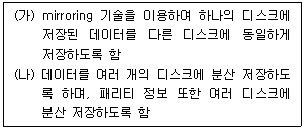
- (가)RAID-0, (나)RAID-5
- (가)RAID-1, (나)RAID-5
- (가)RAID-1, (나)RAID-4
- (가)RAID-2, (나)RAID-4
(정답률: 83%)

2. 다음의 결과를 출력하기 위하여 사용되는 명령어는?
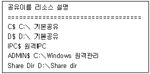
- net use
- net share
- net file
- net accounts
(정답률: 87%)
3. 웹 브라우저가 웹서버에게 쿠키 값을 전송할 때 사용하는 HTTP 헤더는?
- Connection
- Proagrma
- Set-cookie :
- Cookie :
(정답률: 54%)
4. 운영체제의 주요기능에 대한 설명으로 옳지 않은 것은?
- 사용자와 하드웨어 간의 인터페이스를 정의한다.
- 고급 언어로 작성된 프로그램을 이진(0 또는 1) 기계어로 번역한다.
- 오류 검사 및 복구 기능을 수행한다.
- 사용자 간의 자원을 스케줄링하고 할당하는 기능을 수행한다.
(정답률: 63%)
5. 다음 지문에서 설명하는 공격은?
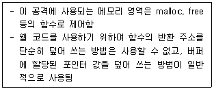
- 스택 버퍼 오버플러우
- 레이스 컨디셔닝
- 힙 버퍼 오버플로우
- RTL(Return To Libc)
(정답률: 70%)
6. 인터넷 익스플로러에서는 보안 설정을 지정할 웹 콘텐츠 영역을 지정할 수 있다. 다음 중 지정할 수 없는 영역은 어느 것인가?
- 로컬 인트라넷
- 신뢰할 수 있는 사이트
- 보안 등급 지정 가능한 사이트
- 제한된 사이트
(정답률: 50%)
7. 사용자 로그인과 로그아웃 정보를 누적하여 저장하는 파일은?
- utmp
- wtmp
- lastlog
- xferlog
(정답률: 66%)
8. 다음 보기 괄호 안에 공통으로 들어갈 적당한 단어는?
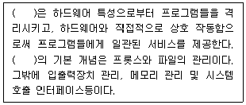
- 유틸리티(Utilities)
- 커널(Kernel)
- 셀(Shell)
- 데몬(Daemon)
(정답률: 68%)
9. 인터넷 브라우저 공격에 대한 대응방법으로 옳지 않은 것은?
- Active X는 "사용함"으로 설정한다.
- 백신프로그램을 설치하여 사용한다.
- 신뢰할 수 없는 사이트의 접속을 피한다.
- 브라우저에 최신 버전의 보안패치를 설치한다.
(정답률: 72%)
10. 여러 프로세스가 자원의 이용을 위해 경쟁을 벌이는 현상을 이용하는 공격은 무엇인가?
- SQL 인젝션 공격
- LADP 인젝션 공격
- XML 인젝션 공격
- 레이스 컨디션 공격
(정답률: 79%)
11. 윈도우 NTFS에서 모든 파일들과 디렉터리에 대한 정보를 포함하고 있는 것은?
- MFT(Master File Table)
- FAT(File Allocation Table)
- $AttrDef
- $Logfile
(정답률: 74%)
12. 다음 중 NTFS에서 Sector_per_cluster로 정할 수 없는 것은?
- 1
- 6
- 8
- 16
(정답률: 63%)
13. 다음 지문에서 설명하고 있는 침입탐지 기술이 무엇인지 고르시오.
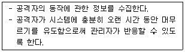
- IDS(Instrusion Detection System)
- IPS(Instrusion Prevention System)
- UTM(Unified Threat Management)
- Honeypot
(정답률: 79%)
14. 다음 중 윈도우 시스템의 NTFS 파일시스템에 대한 설명으로 가장 거리가 먼 것은?
- NTFS 에서 지원하는 파일 암호화 기법을 NES라고 한다.
- NTFS 보안에서는 파일 단위까지 보안을 적용시킬 수 있다.
- 개별 사용자가 그룹 A와 그룹B에 속해 있을 경우에 특정 파일이나 디렉터리에 대한 접근권한을 그룹 A와 그룹 B의 것 모두 가진다.
- NTFS 접근권한 중 "쓰기" 권한은 해당 디렉터리의 서브디렉터리와 파일을 생성할 수 있다.
(정답률: 33%)
15. 논리폭탄에 대한 특징을 설명하고 있는것은?
- 프로그래머나 시스템 관리자가 그들만이 사용할 수 있도록 소프트웨어에 보안 hole을 만들어 놓는다.
- 컴파일러 개발자가 컴파일러 안에 악성코드를 삽입하여 유포함으로써, 소프트웨어의 소스코드에서는 악성코드를 찾을 수 없도록 하였다.
- 프로그램 환경변수들이 사전 정의된 값과 일치되면 악성행위를 수행 한다.
- 자기 복제기능을 갖고 있다.
(정답률: 66%)
16. Visual Basic 스크립트를 이용한 악성코드에 대한 설명으로 맞는 것은?
- 웹브라우저에서 실행될 경우 스크립트가 브라우저에 내장되므로 파일의 내용을 확인하기 어렵다.
- 독립형으로 개발할 경우 파일 생성에 제한을 받아 윔형 악성코드를 만들지 못한다.
- 확장자는 VBA다.
- 이메일에 첨부되어 전파될 수 있다.
(정답률: 30%)
17. 윈도우 레지스트리 하이브 파일이 아닌것은?
- HKEY_CLASSES_ROOT
- HKEY_LOCAL_MACHINE
- HKEY_CURRENT_SAM
- HKEY_CURRENT_USER
(정답률: 76%)
18. 레지스트리 종류에 대한 설명으로 옳지 않은 것은?
- HKEY_CURRENT_CONFIG : HKEY_LOCAL_MACHINE의 서브로 존재하는 정보로서 실행 시간에 수집한 정보가 저장된다.
- HKEY_CURRENT_USER : 전체 사용자들에 관한 정보가 저장된다.
- HKEY_LOCAL_MACHINE : 사용자에 관계없이 시스템에 적용되는 하드웨어와 소프트웨어 정보가 저장된다.
- HKEY_CLASSES_ROOT : 파일과 프로그램간 연결 정보와 OLE 객체 정보가 저장된다.
(정답률: 43%)
19. 로그에 관한 설명으로 옳지 않은 것은?
- wtmp : 사용자들이 로그인, 로그아웃한 정보를 가지고 있다.
- utmp : 시스템에 현재 로그인한 사용자들에 대한 상태정보를 수집한다.
- pacct : 사용자가 로그인한 후부터 로그아웃하기 까지의 입력한 명령과 시간, 작동된 tty등에 대한 정보를 수집한다.
- btmp : syslog 데몬에서 일괄적으로 생성된 로그 정보를 수집한다.
(정답률: 66%)
20. 다음 지문에서 설명하고 있는 공격은?
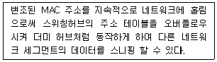
- ICMP Redirect
- ARP Redirect
- Switch Jamming
- ARP Spoofing
(정답률: 62%)
2과목: 네트워크 보안
21. 다음 중 NAT에 대한 설명으로 가장 부적절한 것은?
- 인터넷으로 라우팅할 수 없는 사설 주소를 공인 인터넷 주소로 전환하여 라우 팅이 가능하도록 한다.
- 호스트는 사설 IP를 사용하면서 인터넷 및 통신을 할 수 있으므로 공인 IP 주소의 낭비를 방지할 수 있다.
- 주소 관련 디렉토리 데이터를 저장하고 로그온 프로세스, 인증 및 디렉토리 검색과 같은 사용자와 도메인 간의 통신을 관리한다.
- 외부 컴퓨터에서 사설 IP를 사용하는 호스트에 대한 직접접근이 어려워 보안 측면에서도 장점이 있다.
(정답률: 56%)
22. 다음 설명 중 옳지 않은 것은?
- 인터넷에 연결된 2대의 컴퓨터에서 동작하는 응용들 간의 연결을 유일하게 식별하기 위한 출발지/목적지 IP주소, 출발지/목적지 포트번호, TCP 또는 UDP등과 같은 프로토콜 종류 등의 정보가 이용된다.
- 프트 번호 중 0번 - 1023번은 잘 알려진 포트(well-known port)로 불리며 이포트 번호들은 클라이언트 기능을 수행하는 응용쪽에 배정된다.
- 포트 번호의 범위는 0번에서 65535번이며 이 포트번호는 TCP와 UDP 프로토콜에 각각 부여된다.
- 자주 이용되는 서비스에 대한 포트 번호로는 SSH(22번), SMTP(25번), FTP(20, 21번), DNS(53번) 등이 있다.
(정답률: 37%)
23. 다음 용어 중 개념상 나머지와 가장 거리가 먼 것은?
- sniffing
- eavesdropping
- tapping
- spoofing
(정답률: 45%)
24. 침입방지시스템(IPS)의 출현 배경으로 옳지 않은 것은?
- 인가된 사용자가 시스템의 악의적인 행위에 대한 차단, 우호경로를 통한 접근대응이 어려운 점이 방화벽의 한계로 존재한다.
- 침입탐지시스템의 탐지 이후 방화벽 연동에 의한 차단 외에 적절한 차단 대책이 없다.
- 악성코드의 확산 및 취약점 공격에 대한 대응 능력이 필요하다.
- 침입탐지시스템과 달리 정상 네트워크 접속 요구에 대한 공격패턴으로 오탐 가능성이 없다.
(정답률: 74%)
25. 프로그램에 이상이 있거나 자신이 의도하지 않는 프로그램이 백그라운드로 실행되고 있는지를 알고 싶을때 프로세스의 확인 작업을 하게 되는데 윈도우에서는 작업관리자를 통해 프로세스를 확인할 수 있다. 아래에서 설명하고 있는 프로세스는 무엇인가?
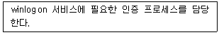
- lsass.exe
- winmgmt.exe
- smss.exe
- services.exe
(정답률: 29%)
26. UTM에 대한 설명 중 옳지 않은 것은?
- UTM은 다양한 보안 솔루션을 하나의 장비에 탑재하여 운영하는 All-in-One 통합보안 솔루션이다.
- 보안정책 적용이 개별적으로 이루어지므로 전문가의 운영이 필요하다.
- 다양한 보안 기능을 하나의 솔루션에 통합하여 복합 해킹 위협에 효과적으로 대응하는 데 목적을 두고 있다.
- 보안 정책, 필터링 시그니처를 통합 관리하여 일관성과 운영 효율성을 제공한다.
(정답률: 72%)
27. Snort의각 규칙은 고정된 헤더와 옵션을 가지고 있다. 패킷의 payload 데이터를 검사할때 사용되는 옵션에 포함되지 않는 필드는?
- ttl
- content
- depth
- offset
(정답률: 67%)
28. IPv6의 개념 및 특징을 설명한 것으로 옳지 않은 것은?
- IPv6는 256 비트 주소체계를 사용하므로 기존의 IPv4에 비해 4배 이상 커졌다.
- 8개 필드로 구성된 헤더와 가변 길이 변수로 이루어진 확장 헤더 필드를 사용한다.
- 규모 조정이 가능한 라우팅 방법이 가능하고 사용하지 않는 IP에 대해 통제를 할 수 있다.
- 보안과 인증 확장 헤더를 사용함으로써 인터넷 계증의 보안 기능을 강화한다.
(정답률: 61%)
29. 다음 보기 괄호 안에 들어갈 가장 적절한 단어는?
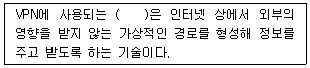
- 터널링
- 인증기술
- 접근통제기술
- 인식기술
(정답률: 85%)
30. 다음 중 UDP flooding 공격 과정에서 지정된 UDP 포트가 나타내는 서비스가 존재하지 않을 때 발생되는 패킷은 무엇인가?
- ICMP Unreachable
- UDP Unreachble
- ICMP Drop
- UDP Drop
(정답률: 45%)
31. 다음 중 end point 에 설치되어 다양한 보안 기능을 통합적으로 수행하는 보안 시스템을 지칭하는 것은?
- IPS
- NAC
- Firewall
- UTM
(정답률: 49%)
32. VPN의 기능과 가장 거리가 먼 것은?
- 데이터 기밀성
- 데이터 무결성
- 접근통제
- 시스템 무결성
(정답률: 68%)
33. 오용탐지 방법으로 적당하지 않은 것은?
- 시그니처 분석
- 페트리넷(Petri-net)
- 상태전이 분석
- 데이터마이닝
(정답률: 62%)
34. traceroute에 대한 설명 중 옳지 않은 것은?
- 목적지까지의 데이터 도달 여부를 확인하는 도구이다.
- 네트워크와 라이팅의 문제점을 찾아낼 목적으로 사용되는 도구이다.
- 컴퓨터 자신의 내부 네트워크 상태를 다양하게 보영주는 명령어이다.
- 결과값이 *로 표시되는 경우 침입차단시스템 등의 접근통제 장치에 의해 UDP 패킷이 차단되었음을 확인 할수 있다.
(정답률: 63%)
35. 다음 지운은 OSI 네트워크 모델에 대한 설명이다. ( )안에 들어가야 할 적당한 단어를 표시된 것은?
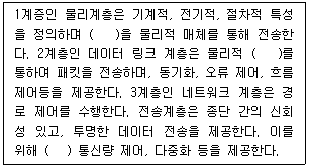
- 프레임, 매체, 동기화 제어
- 프레임, 링크, 오류 제어
- 비트 스트림, 매체, 동기화 제어
- 비트 스트림, 링크, 오류 제어
(정답률: 60%)
36. 다음에 설명하는 유닉스 파일시스템의 영역은 무엇인가?
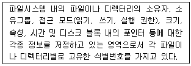
- boot 블록
- super 블록
- inode 블록
- data 블록
(정답률: 84%)
37. 스텔스 스캔의 종류에 해당되지 않은 것은?
- UDP 스캔
- XMAS 스캔
- TCP Fragmentation 스캔
- ACK 스캔
(정답률: 33%)
38. 다음 중 침입탐지시스템(IDS)의 동작 단계에 해당하지 않은 것은?
- 데이터 수집 단계
- 트래픽 분산 및 로드 밸런싱 단계
- 데이터 가공 및 축약 단계
- 분석 및 침입 탐지 단계
(정답률: 60%)
39. 스위칭 환경에서의 스니핑 공격 유형 중 공격자가 "나의 MAC 주소가 라우터의 MAC 주소이다" 라는 위조된 ARP Reply를 브로드캐스트로 네트워크에 주기적으로 보내어 스위칭 네트워크상의 다른 모든 호스트들이 공격자 호스트를 라우터로 믿게 하는 공격은?
- Switching Jamming
- ICMP Redirect
- ARP Redirect
- DNS Spoofing
(정답률: 52%)
40. 관계형 데이터베이스 모델의 구성요소 중 한 릴레이션에서 특정 속성이 가질 수 있는 모든 가능한 값의 집합을 무엇이라고 하는가?
- 튜플(Tuple)
- 도메인(Domain)
- 키(Key)
- 속성(Attribute)
(정답률: 58%)
3과목: 어플리케이션 보안
41. 다음 중 한국인터넷진흥원의 홈페이지 취약점 진단제거 가이드, 행정안전부의 소프트웨어 개발 보안 가이드, 행정안전부의 주요 정보통신기반시설 가술적 취약점 분석 평가 방법상세가이드 등에서 공통적으로 언급하고 있는 웹 애플리케이션 취약점과 가장 관계가 없는 항목은?
- XSS (Cross-site Scripting)
- GET Flooding
- CSRF (Cross-site request forgery)
- SQL Injection
(정답률: 72%)
42. HTTP의 요청방식에 대한 다음 설명 중 옳지 않은 것은?
- GET은 요청 받은 정보를 다운로드하는 메소드이다.
- POST는 서버가 전송된 정보를 받아들이고 서버에서 동작하도록 하는 메소드이다.
- PUT은 내용이 주어진 리소스에 저장되기를 원하는 요청과 관련된 메소드이다.
- TRACE는 요청 받은 리소스에서 가능한 통신 옵션에 대한 정보를 요청하는 메소드이다.
(정답률: 50%)
43. 다음 중 전자 지불 시스템의 위험 요소와 가장 거리가 먼 것은?
- 이중사용
- 접근성
- 위조
- 거래부인
(정답률: 58%)
44. 다음 중 데이터베이스 보안 유형이 아닌 것은?
- 접근 제어 (Access Control)
- 허가 규칙 (Authorization)
- 암호화 (Encryption)
- 집합 (Aggregation)
(정답률: 74%)
45. 크래커들이 자주 사용하는 방법 중에는 한번 들어온 서버에 다시 쉽게 침입할 수 있도록 suid가 설정된 root 소유의 프로그램을 백도어로 설치하여 다음에는 손쉽게 root 권한을 획득 할 수 있도록 하는 방법이 있다. 아래의 명령어를 사용하여 시스템관리자는 주기적으로 suid로 설정된 파일을 모니터링 하여 시스템을 안전하게 보호할 필요가 있다. 괄호 ( ) 안에 들어갈 옵션을 순서대로 바르게 나타낸 것은 어느 것인가?
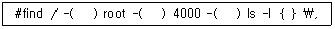
- user, exec, perm
- exec, user, perm
- perm, user, exec
- user, perm, exec
(정답률: 48%)
46. 다음 중 암호 키 보호에 하드웨어를 사용하는 기술과 가장 거리가 먼 것은?
- 스마트카드
- HSM
- TPM
- SIM
(정답률: 50%)
47. FTP 전송모드에 대한 설명으로 옳은것은?
- 디폴트는 active 모드이며, passive 모드로의 변경은 FTP 서버가 결정한다.
- 디폴트는 active 모드이며, passive 모드로의 변경은 FTP 클라이언트가 결정한다.
- 디폴트는 passive 모드이며, active 모드로의 변경은 FTP 서버가 결정한다.
- 디폴트는 passive 모드이며, active 모드로의 변경은 FTP 클라이언트가 결정한다.
(정답률: 70%)
48. 웹서버의 웹로그 보안과 관련된 내용으로 적합하지 않은 것은?
- 웹로그 파일 분석을 통하여 클라이언트의 IP, 접속시간, 요청방식 및 내용, 상태코드 정보를 확인 할 수 있다.
- 400(Bad Request) 같은 상태코드는 Apache 웹서버의 경우 요청한 URL 정보와 함께 error_log 파일에 기록된다.
- 웹서버의 로그 검사기능을 활성화시켜야 하며 로그파일의 크기가 커지지 않도록 로그파일 분할 기능을 사용하여야 한다.
- default. ida?xxx 와 같은 요청이 로그에서 발견된 경우 웜에 의한 공격이 시도 되었을 가능성이 있다.
(정답률: 28%)
49. 다음은 전자상거래 보안 프로토콜에 대한 설명이다. 설명으로 옳지 않은 것은?
- SET : 공개키 기반 구조를 바탕으로 사용자 인증
- SSL : 제어 프로토콜과 레코드 프로토콜의 2계증으로 구성
- SET : 트랜잭션 정보의 비밀성 보장을 위하여 공개키, 비밀키 암호방식을 혼합하여 사용
- SSL : 하이퍼링크 앵커는 서버 식별, 요구되는 암호 매개변수 등을 지시
(정답률: 44%)
50. 다음 SSO에 설명으로 옳지 않은 것은?
- 개별 응용 레벨의 권한 제어
- 인증 정책과 권한 설정 용이
- 자원별 권한 관리 약함
- 중앙집중식 ID 관리
(정답률: 35%)
51. 다음 중 PGP의 기능이 아닌 것은?
- 기밀성
- 전자서명
- 단편화와 재조립
- 송수신 부인방지
(정답률: 50%)
52. 웹에서 사용하는 HTTP 프로토콜 중 HTTP 응답(Response) 코드로 맞게 설명한 것은?
- 100번 코드 - 정보 전송
- 200번 코드 - 성공
- 300번 코드 - 재전송
- 400번 코드 - 서버 측 에러
(정답률: 48%)
53. 다음은 웹 보안 공격 방지에 대한 설명을 나열한 것이다. 어떤 웹 보안 공격을 방지하기 위한 설명인가?
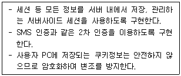
- 파일 업로드 공격방지 방법
- 쿠키/세션 위조 공격방지 방법
- SQL 인젝션 공격방지 방법
- 파일 다운로드 공격방지 방법
(정답률: 76%)
54. 다음 중 HTTP에 대한 설명으로 옳지 않은 것은?
- TCP 프로토콜을 이용하여 HTML 문서를 전송하는 프로토콜이다.
- 웹 브라우저에서 URL을 입력하여 접속한다.
- 기본 포트는 433번 포트를 이용한다.
- 클라이언트와 서버 간에 연결 상태를 유지하지 않는 프로토콜이다.
(정답률: 62%)
55. DRM(Digital Right Management)에 대한 설명으로 옳지 않은 것은?
- 디지털 콘텐츠의 불법 복제와 유포를 막고, 저작권 보유자의 이익과 권리를 보호해 주는 기술과 서비스를 말한다.
- DRM은 파일을 저장할 때, 암호화를 사용한다.
- DRM 탬퍼 방지(tamper resistance) 기술은 라이선스 생성 및 발급관리를 처리한다.
- DRM은 온라인 음악 서비스, 인터넷 동영상 서비스, 전자책 CD/DVD 등의 분야에서 불법 복제 방지 기술로 활용된다.
(정답률: 49%)
56. 다음은 메일 서비스 공격 유형 및 대책에 대한 설명 중 적합하지 않은 것은?
- Active Contents 공격은 메시지 내용에 사용자 계정을 기록하고, 도착할 수 없는 메시지를 보낼 때 발생하는 헤더 피싱코드의 버그를 이용한 공격이다.
- Buffer Overflow 공격은 공격자가 조작된 E-Mail을 보내 피해자의 컴퓨터에서 임의의 명령을 실행하거나 트로이 목마와 같은 악성코드를 심을 수 있도록 한다.
- Outlook에서 Active Contents공격에 대한 대책으로는 E-Mail의 스크립팅 기능을 사용하지 않도록 설정하는 것이다.
- 스팸메일 Relay를 차단하기 위한 대책으로 mail 서버에서 릴레이 허용 불가로 설정하는 방법이 있다.
(정답률: 18%)
57. 다음 중 취약점 점검 도구와 가장 거리가 먼 것은?
- SATAN
- Tripwire
- Nessus
- OOPS
(정답률: 47%)
58. Spam Assain 스팸 필터링 분류 기준이 아닌 것은?
- 헤더
- 본문 내용
- MAC 주소
- 첨부파일
(정답률: 53%)
59. E-mail의 첨부파일을 열었을 대 악성코드가 실행되거나 특정파일을 선택했을 때 바이러스가 확산되는 공격유형은?
- Shell Script 공격
- Trojan Horse 공격
- Buffer Overflow 공격
- Active Contents 공격
(정답률: 32%)
60. 인증서 폐지 목록(CRL)을 생성하는 주체에 해당하는 것은?
- CA
- RA
- LRA
- VA
(정답률: 69%)
4과목: 정보 보안 일반
61. 키 배송 문제를 해결할 수 있는 방법에 해당하지 않는 것은?
- 키 배포 센터에 의한 해결
- Diffie-Hellman 키 교환 방법에 의한 해결
- 전자서명에 의한 해결
- 공개키 암호에 의한 해결
(정답률: 64%)
62. 다음 중 메시지 인증을 위해 사용되는 기법과 가장 거리가 먼 것은?
- 메시지 인증코드(Message Authentication Code)
- 암호학적 체크섬(Cryptographic checksum)
- HMAC(Hash-based Message Authentication Code)
- 난수 발생기(Random Number Generator)
(정답률: 51%)
63. 다음의 암호 관련 용어에 대한 설명 중 옳지 않은 것은?
- 평문은 송신자와 수신자 사이에 주고받는 일반적인 문장으로서 암호화의 대상이 된다.
- 암호문은 송신자와 수신자 사이에 주고받고자 하는 내용을 제 3자가 이해할 수 없는 형태로 변형한 문장이다.
- 암호화는 평문을 제 3자가 알 수 없도록 암호문으로 변형하는 과정으로서 수신자가 수행한다.
- 공격자는 암호문으로부터 평문을 해독하려는 제 3자를 가리키며, 특히 송/수신자 사이의 암호 통신에 직접 관여하지 않고, 네트워크상의 정보를 관찰하여 공격을 수행하는 공격자를 도청자라고 한다.
(정답률: 70%)
64. 소프트웨어로 구성되는 난수 생성기를 가장 적절하게 표현한 것은?
- SRNG
- HRNG
- PRNG
- RRNG
(정답률: 48%)
65. Diffie-Hellman 키 분배 프로토콜을 이용하여 송신자 A와 수신자 B간에 동일한 비밀키를 분해하고자 한다. 아래와 같이 조건이 주어졌을 때, 송신자 A와 수신자 B가 분배 받는 비밀키 값은?
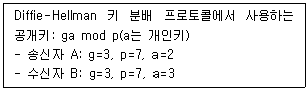
- 1
- 3
- 5
- 7
(정답률: 46%)
66. 임의적 접근통제 방식에 대한 설명 중 옳지 않은 것은?
- 모든 개별의 주체와 객체 단위로 접근 권한을 설정한다.
- 객체의 소유주가 주체와 객체 간의 접근 통제 관계를 정의 한다.
- 접근통제 목록(ACL)을 통해 구현한다.
- 중앙집중적으로 통제 되는 환경에 적합하다.
(정답률: 60%)
67. Bell-LaPadula 모델에 대한 설명으로 옳지 않은 것은?(오류 신고가 접수된 문제입니다. 반드시 정답과 해설을 확인하시기 바랍니다.)
- 낮은 보안 레벨의 권한을 가진 이는 높은 보안 레벨의 문서를 읽을 수 없고, 자신의 권한보다 낮은 수준의 문서만 읽을 수 있다.
- 자신보다 높은 보안 레벨의 문서에 쓰기는 가능하지만 보안 레벨이 낮은 문서에는 쓰기 권한이 없다.
- 정보에 대한 기밀성을 보장하기 위한 방법으로 강제적 접근 모델 중 하나이다.
- 낮은 보안 레벨의 권한을 가진 이가 높은 보안 레벨의 문서를 읽고 쓸 수는 없으나, 낮은 레벨의 문서에는 읽고 쓸 수 있다.
(정답률: 46%)
68. "한 단계 앞의 암호문 블록"을 대신할 비트열을 무엇이라 하는가?
- 패딩
- 초기화 벡터
- 스트림 블록
- 운영모드
(정답률: 62%)
69. X.509 인증서에 대한 설명 중 옳지 않은 것은?
- X.509 인증서는 인증서의 주인인 사용자가 직접 발행한다.
- X.509 인증서의 유효기간이 지나면 CA는 해당 인증서를 디렉터리에서 제거한다
- X.509 인증서를 제거한 다음, CA는 추후 부인방지 서비스를 위해 일정기간 보관한다.
- 개인키의 손상/유출 등의 이유로 사용자가 신고한 X.509 인증서는 CA가 폐기한다.
(정답률: 43%)
70. OTP에 대한 다음 설명 중 잘못된 것은?
- 비밀번호 재사용이 불가능
- 비밀번호 유추 불가능
- 의미 있는 숫자 패턴을 활용
- 오프라인 추측공격에 안전
(정답률: 77%)
71. Kerberos 프로토콜에 대한 설명으로 옳지 않은 것은?
- 비밀키 암호작성법에 기초를 둔 온라인 암호키 분배방법이다.
- Kerberos 프로토콜의 목적은 인증되지 않은 클라이언트도 서버에 접속할 수 있도록 하는 것이다.
- 키 분배 센터에 오류 발생시, 전체 서비스를 사용할 수 없게 된다.
- Kerberos 프로토콜은 데이터의 기밀성과 무결성을 보장한다.
(정답률: 64%)
72. 대칭암호화 매커니즘과 관련하여 올바른 설명이 아닌 것은?
- 암호화 알고리즘은 평문에 transformation과 substitution을 적용하여 암호문을 만들어 낸다.
- 평문 속의 요소(비트, 문자 등)를 다른 요소(비트, 문자 및 문자열)로 바꾸는 것을 transformation이라 한다.
- 어떤 메시지가 주어졌을 때, 두 개의 다른 키는 두 개의 다른 암호문을 만든다.
- 복호화 알고리즘은 암호화 알고리즘을 역순으로 실행하는 것이다.
(정답률: 50%)
73. 이중 서명을 사용하는 경우로 옳은 것은?
- 송신자와 수신자 간에 문서의 위변조를 방지하기 위한 방법이다.
- 서명 이용자의 신원 노출이나 문서정보의 노출 없이 서명자로부터 서명을 받고 싶을 때 사용한다.
- 구매자의 구매품목 등의 주문정보와 결제 계좌 등의 지불 정보를 분리시켜 서명하며 판매자의 금융기관에 제공되는 정보를 최소화하기 위해 사용된다.
- 문서 송수신 시, 중간자 공격을 방지하기 위해 Salt 및 Nonce를 활용하는 서명 방식을 말한다.
(정답률: 56%)
74. 커버로스(Kerberos)의 기능과 가장 거리가 먼 것은?
- 네트워크 응용 프로그램이 상대방의 신원을 식별할 수 있도록 한다.
- 파일 서버, 터미널 서버, 데이터베이스 서버 등 다양한 서버들을 지원할 수 있다.
- 기밀성, 가용성, 무결성과 같은 보안 서비스를 제공한다.
- 한 번의 인증으로 여러 서버에 접근 할 수 있다.
(정답률: 28%)
75. 다음 지문이 설명하고 있는 암호 분석 공격은?
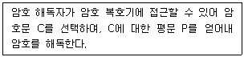
- 암호문 단독 공격
- 기지 평문 공격
- 선택 암호문 공격
- 선택 평문 공격
(정답률: 65%)
76. Diffie- Hellman 키 교환에 대한 설명 중 옳지 않은 것은?
- 인수분해의 어려움에 기반한다.
- 중간자 공격에 취약하다.
- 두 사용자가 사용할 소수와 원시근을 사전에 결정해야 한다.
- 인증 메시지에 비밀 세션키를 포함하여 전달할 필요가 없다.
(정답률: 39%)
77. 다음 중 디바이스 인증 기술에 대한 설명으로 옳지 않은 것은?
- 서버의 데이터베이스에 저장된 아이디와 비밀번호를 비교하여 인증하는 방식을 아이디 패스워드 기반 인증방식이라 한다.
- MAC 주소값 인증 방식은 아이디 없이 MAC 주소만으로 인증하는 방식이다.
- 암호 프로토콜을 활용한 인증 방식은 중간에 키나 세션을 가로 채어 중요 정보를 유출하는 시도를 차단한다.
- 시도-응답 인증 방식은 키를 생성하여 사용자를 인증하는 방식이다.
(정답률: 41%)
78. 다음 중 대칭 알고리즘이 아닌 것은?
- BlowFish
- SEED
- Diffie-Hellman
- 3DES
(정답률: 58%)
79. 다음 중 송신자가 랜덤으로 생성한 세션키를 수신자의 공개키로 암호화하여 전달하는 세션키 공유 기법에 해당하는 것은?
- Challenge-Response 프로토콜
- Diffie-Hellman 프로토콜
- RSA 이용 키 분배 프로토콜
- 공개키 인증서 관리 프로토콜
(정답률: 25%)
80. 개인정보의 기술적 관리적 보호조치 기준에 따른 접속기록에서 필수 항목이 아닌 것은?
- 개인정보취급자 식별정보
- 접속포트
- 수행업무
- 접속지 정보
(정답률: 31%)
5과목: 정보보안 관리 및 법규
81. A, B, C에 들어갈 가장 적합한 용어는 무엇인가?
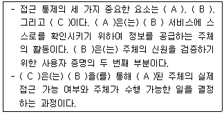
- A: 인가, B: 인증, C: 식별
- A: 식별, B: 인증, C: 인가
- A: 인가, B: 식별, C: 인증
- A: 식별, B: 인가, C: 인증
(정답률: 52%)
82. 빈 칸에 들어가야 할 단어로 옳은 것은?
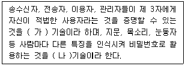
- (가) 인증, (나) 생체인식
- (가) 인증, (나) 패스워드
- (가) 기밀성, (나) 생체인식
- (가) 기밀성, (나) 패스워드
(정답률: 73%)
83. 위험관리에 대한 설명으로 적절하지 않은 것은?
- 정보보호를 위한 기술적, 관리적, 물리적 분야 등에 다양한 측면으로 발생할 수 있는 위험을 식별하고 평가할 수 있는 방법을 정의한다.
- 조직의 위험을 식별하고 이에 대한 적절한 보호 대책을 수립하기 위하여 정기 또는 수시로 위험에 대처할 수 있도록 위험관리 계획을 수립한다.
- 위험관리 수행 인력은 위험관리 방법, 조직의 업무 및 시스템에 대한 전문성을 갖춘 내부인력만으로 위험관리를 수행한다.
- 위험관리 방법론은 베이스라인 접근법, 복합 접근법 등의 다양한 조직에 적합한 방법을 찾을 때까지 위험관리 방법론을 개선할 수 있다.
(정답률: 68%)
84. 정보보호 사전점검에 대한 설명으로 옳은 것은?
- 정보보호 사전점검은 전자적 침해행위에 대비하기 위한 정보시스템의 취약점 분석 평가와 이에 기초한 보호대책의 제시 또는 정보보호 관리체계 구축 등을 주된 목적으로 한다.
- 방송통신위원회는 사업자가 사전점검을 실시하거나 실시계약을 체결한 경우 해당 사업 또는 서비스에 대하여 가점을 부여하는 등 우대조치를 할 수 있다.
- 사전점검 수행기관으로 지정 받으려는 자는 수행기관 지정 신청서를 방송통신위원회에 제출하여야 한다.
- 사전점검 대상 범위는 제공하려는 사업 또는 정보통신 서비스를 구성하는 하드웨어, 소프트웨어, 네트워크 등의 유무형 설비 및 시설을 대상으로 한다.
(정답률: 25%)
85. 다음 지문은 무엇을 설명하고 있는가?
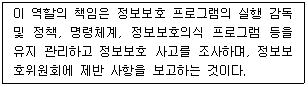
- 정보보호 관리자
- 비상상황관리 위원회
- 시스템 관리자
- 현업 관리자
(정답률: 69%)
86. 다음 중 용어에 대한 설명이 옳지 않은 것은?
- 정성적 기준: 자산 도입 비용, 자산 복구 비용, 자산 교체 비용이 기준이 됨
- 정보보호 관리체계: 정보보호의 목적인 정보자산의 기밀성, 무결성, 가용성을 실현하기 위한 절차 및 과정을 수립하고, 문서화하여 지속적으로 관리, 운영하는 것을 의미
- 정보보호의 정책: 어떤 조직의 기술과 정보자산에 접근하려는 사람이 따라야 하는 규칙의 형식적인 진술을 의미
- 위험분석: 위험을 분석하고, 해석하는 과정으로 조직 자산의 취약점을 식별, 위협분석을 통해 위협의 내용과 정도를 결정하는 과정을 의미
(정답률: 49%)
87. 다음 중 외주 및 협력업체의 인력에 대한 보안을 강화하기 위한 보호대책으로 적절하지 않은 것은?
- 외부위탁 용역 및 협력업체 인력과의 계약서에 보안 관련 사항을 포함시켜야 한다.
- 협력업체 직원 등의 외주 인력은 회사 업무 수행 시 내부 직원과 동일한 수준으로 정보보호 정책을 준수하여야 한다.
- 외부 인력에게 회사의 중요 정보의 접근을 허용하는 경우 한시적으로 제한하여 허용하고, 주기적인 점검이 이루어져야 한다.
- 업무상 필요에 의해 협력업체 직원이 회사 정보 시스템에 대한 접속 및 외부로의 접속이 요구되는 경우 협력업체 책임자의 승인을 받는다.
(정답률: 52%)
88. 도출된 위험이 해당 사업에 심각한 영향을 주는 관계로 보험에 가입하였다. 이런 식으로 위험을 경감 또는 완화시키는 처리 유형은 무엇인가?
- 위험 감소(Reduction)
- 위험 전가(Transfer)
- 위험 수용(Acceptance)
- 위험 회피(Avoidance)
(정답률: 54%)
89. 위험 분석이 방법론 및 관련 사항에 대해 맞게 설명한 것은?
- 복합적 접근법: 기준선 접근법, 상세(세부적) 위험 접근법, 전문가 판단법을 병행 활용
- 정성적 위험 분석: 델파이법, 시나리오법, 순위결정법, 연간예상손실(ALE)
- 정량적 위험 분석: 수학공식 접근법, 확률 분포 추정법, 과거 자료 분석(접근)법
- 전문가 판단법(informal approach): 큰 조직에 적합
(정답률: 39%)
90. 다음 중 정보보호관리체계 의무 대상자에 해당하지 않는 것은?
- 고객의 개인정보를 100만명 이상 보유하고 있는 전자상거래 사업자
- 전기통신사업법의 전기통신사업자로 서울 특별시 및 모든 광역시에서 정보통신망 서비스를 제공하는 사업자
- 상급 종합병원
- 정보통신서비스 부문 전년도 매출액이 100억 이상인 사업자
(정답률: 37%)
91. 100만명 미만의 정보 주체에 관한 개인정보를 보유한 중소기업의 내부 관리 계획의 내용에 포함하지 않아도 될 사항은 무엇인가?
- 개인정보 보호책임자의 지정
- 개인정보 유출 사고 대응 계획 수립, 시행
- 개인정보의 암호화 조치
- 개인정보 처리 업무를 위탁하는 경우 수탁자에 대한 관리 및 감도
(정답률: 53%)
92. 다음 중 위험 분석에 포함된 핵심 개념이 아닌 것은?
- 자산
- 위협
- 취약점
- 손실
(정답률: 54%)
93. 다음 중 정보통신기반보호법에 의거한 주요 정보통신 기반 시설의 지정 시 고려 사항과 가장 거리가 먼 것은?
- 시설을 관리하는 기관이 수행하는 업무의 국가 사회적 중요성
- 다른 정보통신 기반 시설과의 상호 연계성
- 침해 사고가 발생할 경우 국가안전보장과 경제 사회에 미치는 피해 규모 및 범위
- 연말 매출액 또는 세입 등이 500억 이상이 전기통신사업자
(정답률: 57%)
94. 다음 중 공인인증기관이 발급하는 공인인증서에 포함되어야 할 사항이 아닌 것은?
- 가입자의 이름(법인의 경우에는 명칭을 말함)
- 가입자의 생년월일(법인의 경우에는 고유 번호를 말함)
- 가입자의 전자서명검증 정보
- 가입자와 공인인증기관이 이용하는 전자서명 방식
(정답률: 33%)
95. 정량적 위험 분석과 정성적 위험 분석에 대한 다음의 설명 중 틀린 것은?
- 정량적 분석은 객관적인 평가 기준이 적용된다.
- 정량적 분석은 위험 관리 성능 평가가 용이하다.
- 정성적 분석은 계산에 대한 노력이 적게 소요된다.
- 정성적 분석은 비용과 이익에 대한 평가가 필수적으로 요구된다.
(정답률: 48%)
96. 개인정보처리자는 다음 지문의 사항이 포함된 것을 정하고 이를 정보 주체가 쉽게 확인할 수 있게 공개하도록 되어 있다. 다음 지문의 사항이 포함된 문서의 법률적 명칭은 무엇인가?
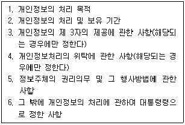
- 개인정보 보호 정책
- 표준 개인정보 보호지침
- 개인정보 보호지침
- 개인정보 처리방침
(정답률: 59%)
97. 다음 중 ebXML(Electronic Business Extensible Markup Language)의 구성 요소가 아닌 것은?
- 핵심 컴포넌트(Core Components)
- 거래 당사자(Tranding Partners)
- 비즈니스 파트너(Business Partners)
- 등록저장소(Registry / Repository)
(정답률: 45%)
98. 침해사고의 유형별 통계, 해당 정보통신망의 소통량 통계 및 접속경로별 이용 통계 등의 침해사고 관련 정보를 과학기술 정보통신부장곤이나 한국인터넷 진흥원에 제공해야 하는 기관이 아닌 것은?
- 정보보호 전문서비스 기업
- 주요 정보통신서비스 제공자
- 컴퓨터 바이러스 백신 소프트웨어 제조자
- 집적정보통신시설 사업자
(정답률: 23%)
99. 다음 중 개인정보보호법에 따른 개인정보 수집 시 반드시 정보주체의 동의가 필요한 경우는?
- 인터넷 홈페이지 등에 공개 된 전화번호 또는 이메일을 통해 직장인 우대 대출, 홍보성 이벤트를 하는 경우
- 동호회의 운영을 위하여 회원의 개인정보를 수집, 이용하는 경우
- 자동차 구매를 위해 고객의 명함을 받은 자동차판매점 담당 직원이 자동차 구매 관련 정보 제공을 위해 명함에 기재 된 연락처를 이용하는 경우
- 소방서에서 홍수로 고립된 사람을 구조하기 위해 위치정보를 수집하는 경우
(정답률: 40%)
100. 다음은 위험 분석 방법과 이에 대한 설명이다. 잘못 설명 된 것은?
- 과거 자료 분석법은 과거의 자료를 통해 위험 발생 가능성을 예측하는 방법이다.
- 확률 분포법은 미지의 사건을 추정하는 데 사용되는 방법이다.
- 시나리오법은 어떤 사건도 기대대로 발생하지 않는다는 사실에 근거하여 일정 조건하에서 위험에 대한 발생 가능한 결과 등을 추정하는 방법이다.
- 순위결정법은 전문적인 지석을 가진 전문가 집단을 구성하여 다양한 위험과 취약성을 토론을 통해 분석하는 기법이다.
(정답률: 60%)